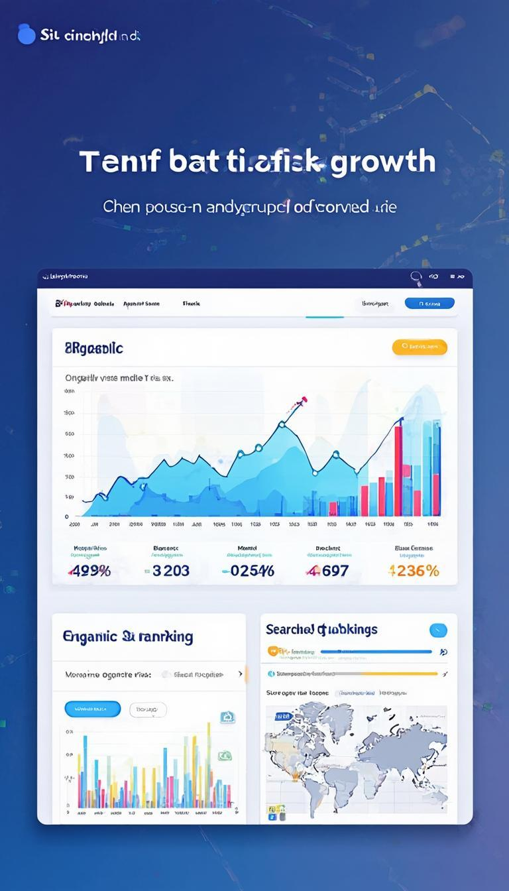
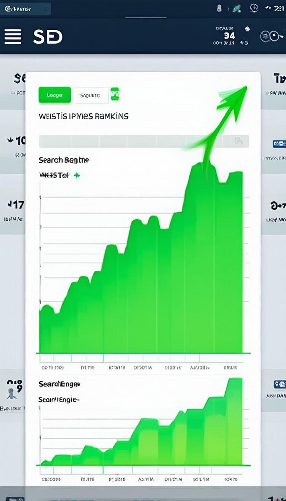

TraviYo — Multi-site SEO
Problem: 10+ client sites with inconsistent indexing and low organic impressions.
Approach
- Monthly audits (Semrush, Screaming Frog)
- Fix GSC errors, canonicalization, sitemap updates
- Content optimization and internal linking
Tools
Semrush • Search Console • Screaming Frog • WordPress • GA
Results
Combined: +50% organic traffic, 30+ keywords improved.

